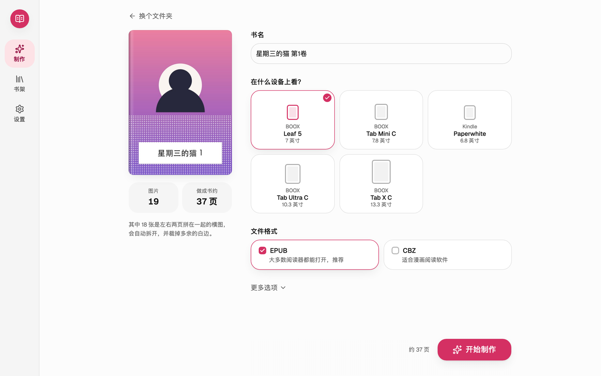
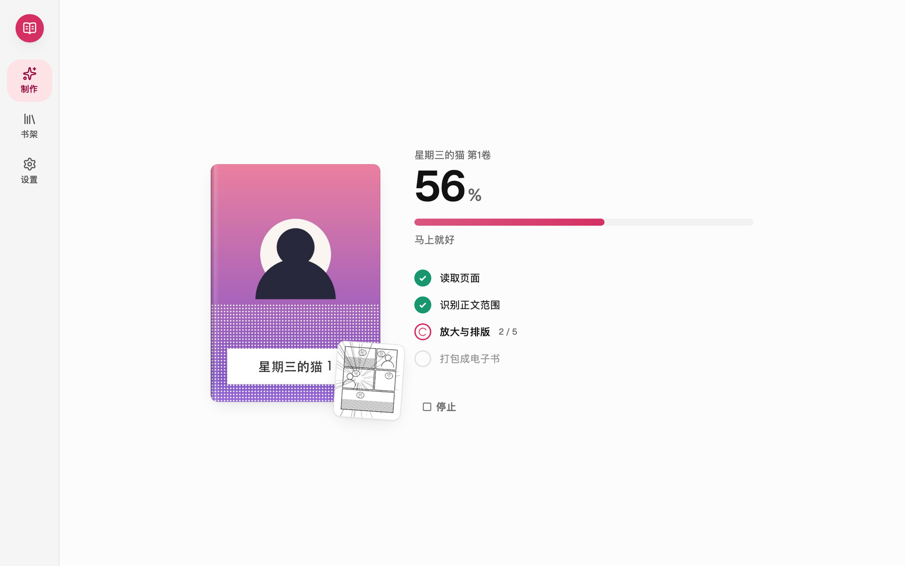
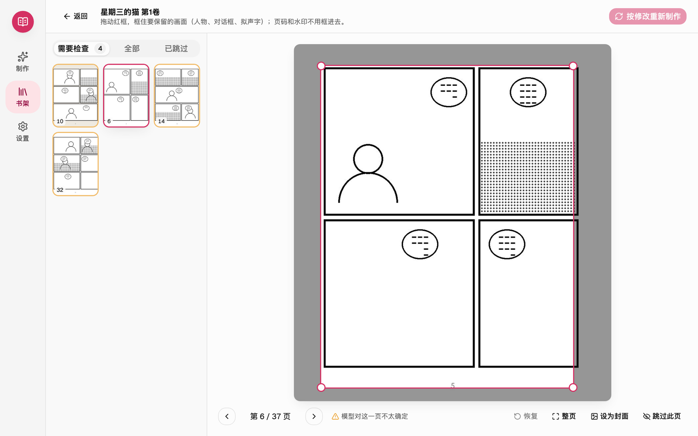
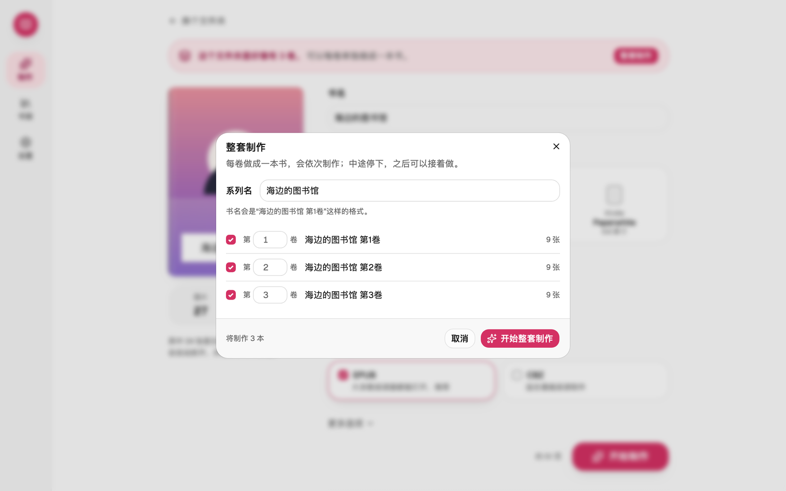
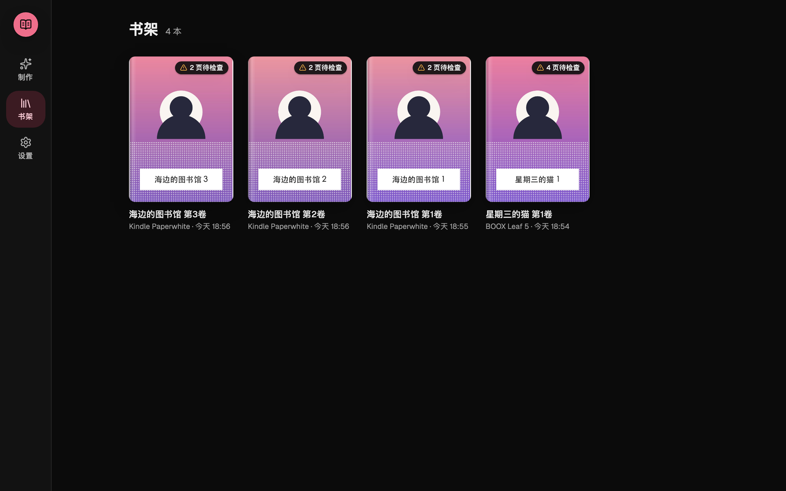

把漫画图片做成电子书
选一个装着漫画图片的文件夹，MangaBox 会自动拆页、裁掉白边、放大到阅读器的分辨率并居中，做成 EPUB / CBZ。免费，双击就能用。

在阅读器上舒服地看漫画
从网上拿到的漫画图片往往是两页拼在一起的横图、留着大片白边、分辨率又不够。MangaBox 一步帮你处理好。
自动拆页
两页拼在一起的横图自动拆开；日漫先右后左，国漫、韩漫、欧美漫画可以选从左往右。
裁掉白边
模型找出正文范围（包括出框的人物、对话框和拟声字），页码和水印不影响裁切。
放大与居中
放大到阅读器分辨率，全书统一大小，翻页不会忽大忽小。
预览与修正
做好先按阅读器的样子翻看；模型不太确定的页排在前面，拖动红框调整，一键重新制作。
整套制作
按卷分好的多卷漫画（子文件夹或压缩包），确认卷号后每卷做成一本，中途停下也能接着做。
只在你的电脑上
原图不会被修改，也不会上传到网络。
支持图片文件夹和 zip / cbz / rar / 7z 压缩包，拖进窗口就能开始。
支持 BOOX Leaf 5 / Tab Mini C / Tab Ultra C / Tab X C，Kindle / Paperwhite / Colorsoft / Scribe，Kobo Clara / Libra / Sage / Elipsa 2E；其他阅读器可以自定义屏幕分辨率。
三步做好一本书
选文件夹 → 确认书名和阅读器 → 开始制作。做好后可以逐页检查。




截图中的漫画是程序生成的示意图。
下载
免费下载，解压或打开即可使用，不需要安装 Python 等任何环境。
常见问题
会上传我的漫画吗？
不会。所有处理都在你的电脑上完成。MangaBox 只在检查新版本时联网（可在设置里关闭）。
为什么第一次打开会被系统拦一下？
MangaBox 是免费软件，没有购买苹果公证和 Windows 代码签名证书，系统无法验证开发者。按上面的说明放行一次即可。
做好的书在哪里？
macOS 在“文稿/MangaBox”，Windows 在“文档\MangaBox”，在“设置”里可以一键打开。
支持压缩包吗？
支持 zip / cbz / rar / 7z，可以直接选择或拖进窗口；有密码的压缩包需要先解压。
怎么更新？
有新版本时 MangaBox 会提示，在“设置 → 关于”里可以直接下载新安装包，替换旧版即可，做好的书不受影响。
遇到问题怎么办？
请到 GitHub Issues 反馈，并附上诊断信息：在“设置 → 遇到问题”点“导出诊断信息”，会在“下载”文件夹生成一个压缩包（不含漫画图片）。